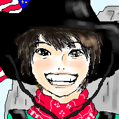

私は2001年度の天てれをたまにしか見ていませんでした。
今回、ご協力を頂き、昨年度のMTKを幸運にも見る事ができましたので、
MTKから2001年度の天てれを振り返ってみたいと思います。
…とは言いながらもただの個人的感想がほとんどですが（笑）。
まずは春のこの曲達をどうぞ♪

『君のそばにいたい〜I only want to be with you』
＜詞曲：Hawker / Raymonde＞
byハッスル３（熊木翔・山元竜一・竪山隼太）
いきなりの山熊登場で驚かれた方、多いのではないでしょうか。
リアルタイムで見てないので、その時の感動がないのが残念です。
あんまり見てなかったので隼太君のことがよく分からないんですが、歌うまいですよね。
この3人の歌は安心して見ていられます。声質の違いもすごくマッチしてていいですね
カウボーイ姿もキュートっ！！英語の発音も上手いですねぇ。
熊ちゃんの「君がかけた魔法」の「まほぉ〜ぉ〜ぅ♪」って歌い方がツボ♪かなり好きです
やっぱり今のほうが少し声低くなってますね。
この曲聴くと花まるマーケットのオープニングを思い出します。絶対毎日かかってます。
今はそれに合わせて一人で日本語版を歌ってます。何やってるんだか…。
この曲はもう、ほんっと〜〜にっ！山ちゃんが可愛い！！目が釘づけです。
一番のツボは「Now listen honey」じゃないんですよ〜。んふふ〜♪
もちろんココも好きなんですが、もっと好きなのが！
サビの「I only wanna be with you」の「with」の『ｔｈ』を発音してるとこ！
…マニアックですか？(笑) でも、ここの口がホントに可愛いです。
ちょっと笑顔になるんですよ。…もう、ねぇ〜っ可愛い♪
今の男気溢れる山元さんも好きですが、この頃のまだ幼さ残る笑顔が一番好きみたいです。
―illustについて―
「ｔｈ」のとこを描きたかったのですが、舌が描けなくて…。
背景は勝手に合成(笑)。こんなバックは映像にはありません。
『本当は何になりたいんだろう』
＜詞曲：金城綾乃 / 玉城千春＞
byバースディ・ガール（中田あすみ・村上東奈）
あんまり想像つかなかったペアなんです。この二人。
二人共あまりに良い子すぎて…。（もちろん誉め言葉。）
いつもちょっとワガママな子とかの世話をしてるイメージがあるので、
この二人だとお互い良い子だからどんな感じになるのか想像つかなかったんですよ。
PV見てすごく楽しく仲良さそうなのが可愛かったです。二人共自然な感じ♪
あすみちゃんの歌声が本当に好きで、東奈のちょっとハスキーな声も好きで…。
しっかりしたあすみちゃんの主旋律に東奈の柔らかい高音のコーラスが
すごくハマっていて、メチャメチャ聞いてて気持ちいいです！
ハモって転調して…。聴き所たっぷりで何度も聴いてます。
あすみちゃんの「頭もぐ〜ちゃぐちゃ〜」っとこの声がかなり好きです。
この曲、どこかで聴いた事あるみたいで、初めて聴いた時も初めてな感じがしませんでした。
私は歌の好き嫌いが、歌詞によく左右されるのですが、
この歌詞は今まさに私が悩んでることだったのでグサリと来ました。
2人が色んな職業の人に変身するところなんか、
私のやりたかった事がいくつか入っていてすごく切なくなりました。
だんだんと年を取っていく度に夢が一つ一つ消えて行く気がします。
原点に戻って「何になりたいのか」をちゃんと考えて悔いのないように過ごしたいですよね。
―illustについて―
風を受けながら歌うあすみちゃんが本当に綺麗で、すごく見とれてしまいます。
同性なのに恋したような気になります。
東奈は今と比べると驚くくらい幼くてビックリしました。
でも雰囲気は全然変わってなくて、元気で可愛かったです。
東奈が裁判官？になってる時が本当に可愛かったので描いてみました。
『元気をだして』
＜詞曲：Findon / Myers / Puzei＞
byアップル・シェイク（ダーブロウ有紗・モニークローズ・岩井七世）
まずは、こんなに英語が多い曲、七世お疲れ様でした。
洋楽カバーだとやっぱり英語いっぱい入ってますよね。
バランスの取れた三人ですよね。みんなモデルみたい！ホントに小中学生!?
三人ともすんごい可愛いんですけど〜!!これって絶対同学年の男の子が見たら好きになりそう。
曲は最初はあんまり印象に残らない曲だったんですが、聴けば聴くほど好きになってきました。
英語が多くて、さすがのダーさんとモニークがその発音の良さを見せてくれます。
最初のサビ後の「ハーニハーニハニーっ♪」って間奏（？）のとこが好き♪カッコ良し。完璧モデルさんです。
七世も笑顔で歌っててホッとしました。踊りも上手だったし。
この時の方が今より大人っぽいですよね？前髪流してる方が好きかも。すっごい綺麗。
私が天てれにハマり初めて、一番最初に「うわ〜…可愛いよこの子！」と思ったのが七世でした。
ぼーっと見てた時はあすみちゃんやダ有紗ちゃんの圧倒的な美しさに目が奪われてました。
ちゃんと見始めて、七世にハマり、あのキャラに驚きましたが（笑）、今はキャラも含めて大好きです。
ダーさんとモニークは後でソロがあるからか、この曲は七世カットがちょっとだけ多いですね。
生まれ変わってなりたい髪質第一位がダーさんです。あの色、ちょいねこっ毛で軽いウェーブ…（うっとり）。
髪が多い私は、あのペタンとした感じにメチャメチャ憧れます。七世も髪綺麗ですよね〜。
モニーク、この時もだけどEverything〜の時も、上目遣いの顔がディズニーの映画に出て来そうな感じ。
なんか突然変な事言ってすみません（笑）。でもモニークってディズニー顔じゃないですか!?
―illustについて―
ほんっとに可愛かったので七世を描いてみたのですが…。
細すぎて、バランスが難しい！うらやましいよ、まったく。
一番時間かかったのがアニマル柄の服です。